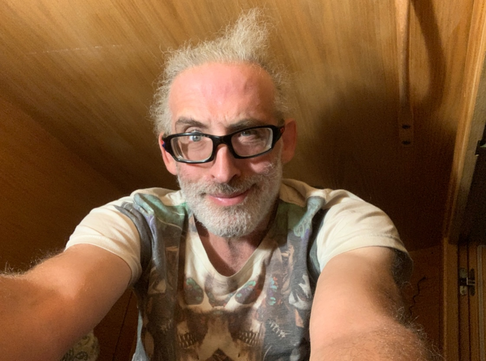

Brian Krawitz is an artist, creative technology evangelist, and systems-minded builder whose work moves between sculpture, immersive environments, and regenerative community design. With a career spanning nearly three decades across broadcast media, experiential production, XR development, and large-scale installation, he brings a rare combination of technical fluency and visionary imagination to everything he creates.
Raised in a family of musicians and shaped by the energy of New York’s rave culture, Brian came to understand early that sound, light, and shared experience could become powerful tools for transformation. That insight still lives at the core of his practice, where art is not treated as decoration, but as a living interface between imagination, technology, and human connection.
His professional path in television began in 1997 at Bloomberg in New York, initiating a deep dive into media systems and live production workflows that later included roles at E! Networks, Al Gore’s Current TV, and ON24. Rather than pulling him away from art, that foundational career gave him the precision, discipline, and systems awareness that now support his creative work across both physical and digital space.
Over time, Brian brought that technical sensibility into large-scale participatory art and immersive installation. He contributed to major collaborative works including Temple of Flux at Burning Man, where he served as project lead; Zoa, where he led lighting fixture design; and Mens Amplio, where he developed lighting concepts and led volunteer teams for the build. Inspired by Burning Man, he co-founded m0xy industrial arts space in 2014, one year after the Mens Amplio project. Alongside those collaborations, he has created his own sculptural works such as Life Within Itself, The Fountain of Pon Lai, and Kryptonicity, using light, geometry, fabricated materials, and interactive design to create experiences that invite contemplation, wonder, and presence. His work has ranged from festival-scale installation to exhibition contexts including the San Francisco Exploratorium.
As digital space opened new creative territory, Brian expanded his practice into virtual reality and immersive world-building. He developed projects including Unity Sanctuary, The Connected Experience, VR TESOL Environments, Wise Mirror, and co-developed Heartland VR, bringing together Unity development, 3D design, experiential storytelling, and community-centered interaction. Across these works, he treats virtual space much like sculpture: as something to be entered, felt, and inhabited rather than simply viewed.
In recent years, Brian’s practice has evolved beyond art alone and further into land stewardship and regeneration. Applying his systems-minded approach to physical land projects, he has worked with regenerative communities and spaces including Heartland Collective, Ascension Ranch, and Spirit Well Ranch. Across these locations, he has provided a vital mix of hands-on land stewardship, infrastructure development, and systems design—helping to build the physical and operational foundations required for off-grid, sustainable living. This localized, on-the-ground work parallels his larger-scale initiatives with the Agriculture Value Chain Network (AVN), where he helps cultivate agricultural networks, advises on open-source ecosystem tools, and in the conceptual stage of creating digital twins and VR experiences that make eco-learning accessible globally.
What connects all of Brian’s work is a commitment to building environments that help people sense new possibilities. Whether he is shaping a light sculpture, helping realize a large-scale installation, prototyping an immersive world, or designing circular life systems, his focus remains the same: to bridge imagination and reality in ways that deepen coherence between people, place, and future. Currently based in Northern California, he is anchoring an 11-practice regenerative demonstration site—weaving local food systems, ecological practices, and immersive design into a living blueprint for community resilience that serves as a seed point for AVN’s global expansion. Through all his endeavors, he continues to create at the intersection of art, technology, community, and regeneration.